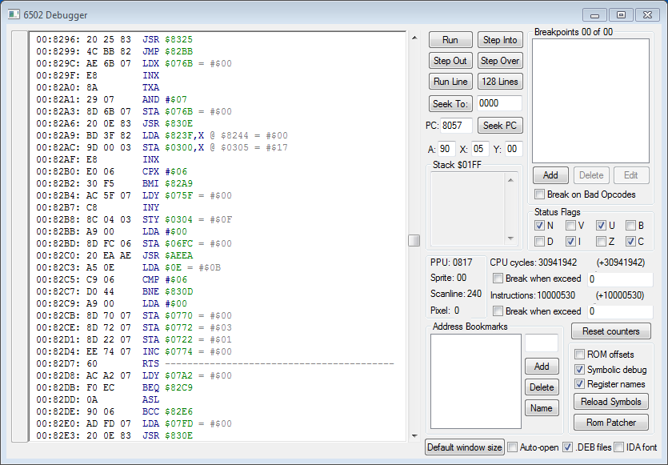
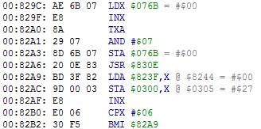
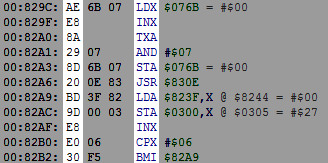
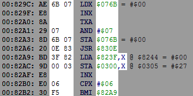
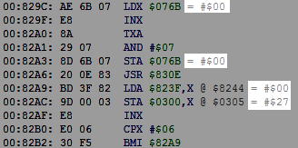
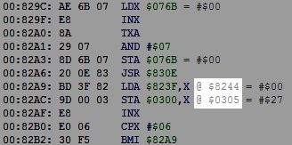
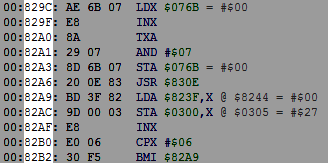
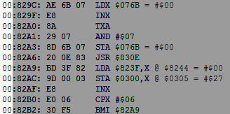

Содержание
Ознакомься с окном Hex Editor перед прочтением раздела.
Debugger предназначен для изучения работы кода игры, а также для редактирования кода. Основная работа с ним осуществляется на паузе эмулятора, в частности после срабатывания Breakpoint'ов.
Окно Debugger'а вызывается в эмуляторе через Debug -> Debugger. Предварительно нужно запустить игру.

Окно охватывает все адреса NES Memory, интерпретируя байты в этих адресах как код. Код в играх находится по адресам $8000-$FFFF.

Значительно реже код также может находиться на батарейке $6000-$7FFF и в RAM $0000-$07FF.
Не весь код, который отображает Debugger, на самом деле является кодом. Окно просто интерпретирует байты в адресах. Достаточно легко отличить реальный код от обычных байтов, которые являются какими-то данными.
Здесь отображаются команды процессора (инструкции).
Эти команды получаются исходя из байтов, которые находятся слева. Эти байты называются называются опкоды.

У одной и той же команды, например команды
После опкода записан операнд команды. Расшифровка операнда отображается справа от команды.

У некоторых команд отсутствует операнд, у других он размером 1 или 2 байта. Размер операнда зависит от разновидности команды. Debugger считывает опкод, вычисляет размер операнда, и отображает следующую команду по списку с учетом общего размера команды.
Например, команда
После знака "=" отображен байт, который находится по указанному адресу в NES Memory.

Нижние 2 байта относятся к адресам, выделенным серым цветом, а не зеленым.
Если адрес, с которым работает команда, вычисляется через индексную или непрямую адресацию, итоговый адрес будет отображен после знака "@".

Этот итоговый адрес может отличаться в разное время. Правильный адрес гарантированно получается только тогда, когда код выполняет эту команду. Если эмулятор не находится на паузе, тогда точно не стоит обращать внимание на эти адреса. Это касается и байтов после знака "=".
Здесь отображен адрес команды из NES Memory.

Слева от него указан номер банка PRG.

Банк - кусок памяти из ROM File, подключенный в NES Memory.